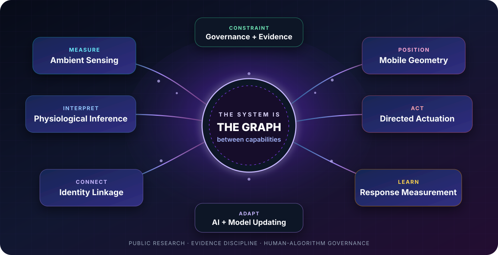
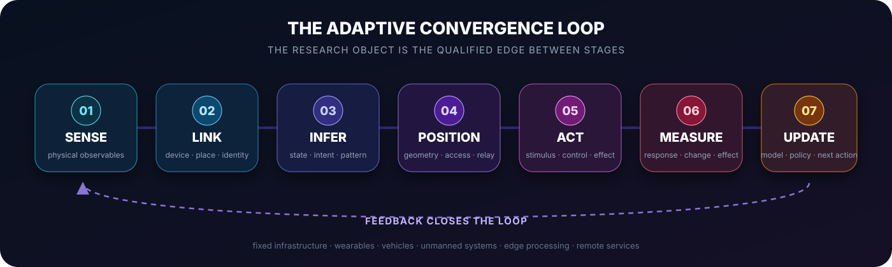

PUBLIC LEDGER
30
Atomic source records
Patents, papers, standards, product records, and institutional sources.

A public research program mapping how contactless sensing, identity linkage, physiological inference, mobile geometry, artificial intelligence, directed actuation, response measurement, and governance can form a distributed human-facing architecture.
30
Atomic source records
Patents, papers, standards, product records, and institutional sources.
30
Atomic public claims
Each claim carries a bounded support layer and an explicit non-claim.
20
Qualified pathways
Technical reachability and evidence state remain separate dimensions.
E4
Publicly established
E5 integration, E6 persistence, and E7 intent remain open proof layers.

Current decision state
Component basis
Strong, multi-domain, and aerially extended.
Technical convergence
The research object—not a claim that every edge is already deployed together.
Integrated closure
Open until a bounded system connects the stages with synchronized records.
Event attribution
Requires event-specific provenance, access, command, and operator evidence.
Start with the strongest object
Each entry point answers a different question: what the architecture is, what mobility adds, why conventional consent fails, and what governance can still be implemented.
The full public synthesis: body-as-signal-medium, contactless physiology, silent speech, neural-data security, aerial mobility, distributed systems, actuation, adaptive AI, and proof requirements.
UAV optical physiology, signs-of-life products, Wi-Fi activity interpretation, thermal vision-language transfer, and mobile infrastructural collection.
The Representation Gap, the Representation Paradox, identity-indeterminate measurement, and the structural failure of person-level protocol controls.
Device indication, space-scoped policy, session attestation, provenance, retention, reassessment, certification, and the honest compliance boundary.